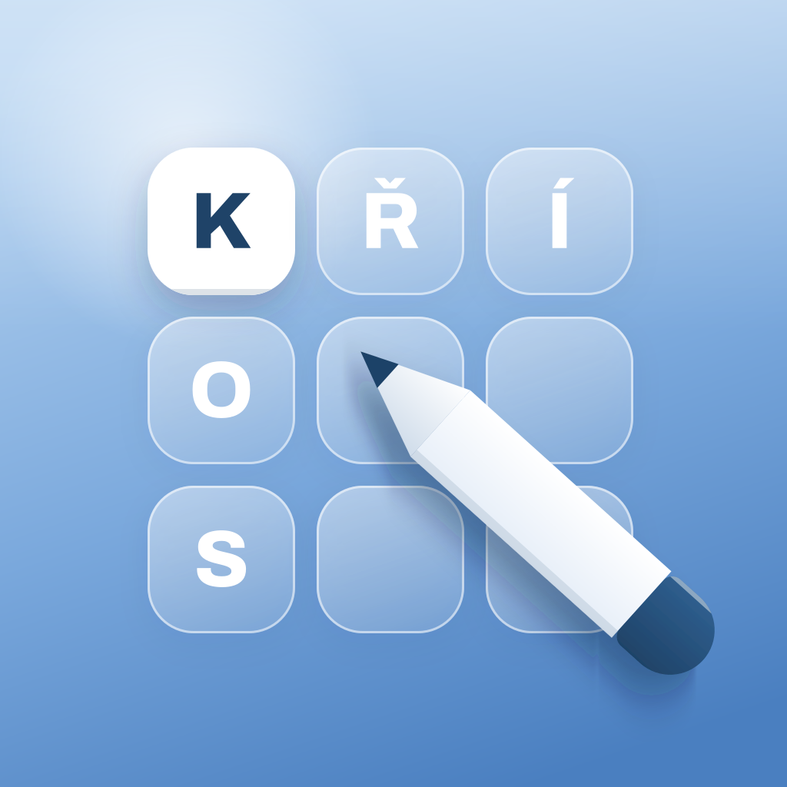

iKřížovky
Zásady ochrany soukromí
Účinné od 1. 10. 2026
Stručně: aplikace iKřížovky nesbírá, neukládá na serverech ani nesdílí žádné osobní údaje. Nemá účty, reklamy ani analytiku a ke svému fungování nepotřebuje internet.
Kdo aplikaci provozuje
Jiří Samek a Gabriela Vymazalová, kontakt: jismk9@gmail.com.
Jaké údaje aplikace zpracovává
Aplikace ukládá pouze ve vašem zařízení:
- rozehrané a vyřešené křížovky, body, časy a použité nápovědy,
- nastavení aplikace (velikost textu, zobrazení času, řádek s diakritikou).
Tyto údaje nikdy neopouštějí vaše zařízení a my k nim nemáme přístup. Mohou být součástí záloh zařízení (iCloud nebo počítač), které spravuje Apple podle vašeho nastavení. Smazáním aplikace se údaje odstraní.
Co aplikace nedělá
- nevyžaduje registraci ani přihlášení,
- nesbírá jméno, e‑mail, polohu, kontakty ani identifikátory zařízení,
- neobsahuje reklamy, sledovací ani analytické nástroje třetích stran,
- neodesílá žádná data přes internet.
Statistiky od Applu
Apple může vývojářům poskytovat souhrnné anonymní statistiky (například počet stažení nebo hlášení o pádech aplikace), a to pouze od uživatelů, kteří sdílení s vývojáři povolili v nastavení svého zařízení. Tato data zpracovává Apple podle svých zásad ochrany soukromí.
Děti
Aplikace je vhodná pro všechny věkové kategorie a od nikoho, ani od dětí, žádné osobní údaje nesbírá.
Vaše práva a kontakt
Protože nezpracováváme žádné vaše osobní údaje, nemáme žádné údaje, které bychom mohli zpřístupnit, opravit nebo vymazat. S dotazy se na nás můžete obrátit na jismk9@gmail.com.
Změny těchto zásad
Pokud se způsob zpracování údajů změní (například přidáním nové funkce), zásady na této stránce aktualizujeme a změníme datum účinnosti.